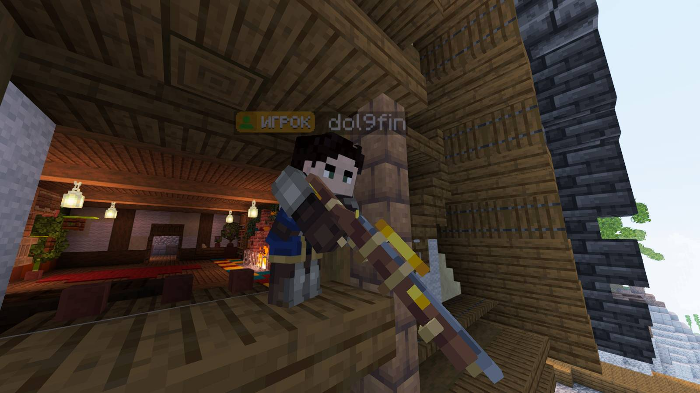

Гайды / Бой
Огнестрел
22 вида оружия: кремнёвые пистолеты, мушкеты, снайперские винтовки, магические винтовки и гранатомёт.

Как стрелять
- Держи оружие в руке и патроны в инвентаре.
- ПКМ — зарядить. У оружия с магазином заряжается сразу несколько выстрелов.
- ПКМ — выстрел.
- ЛКМ у снайперских винтовок — оптический прицел.
- После выстрела ствол остывает, отдача сбивает прицел вверх.
| Боеприпас | Для какого оружия |
|---|---|
| Мушкетная пуля | Пистолеты, мушкеты, винтовки, снайперки |
| Аметистовый осколок | Магические винтовки — луч |
| Огненный шар | Алхимические винтовки и огнемёт |
| Порох | Ручной гранатомёт, 4 за выстрел |
Пистолеты и мушкеты
| Оружие | Урон | Магазин | Особенность |
|---|---|---|---|
| Кремнёвый пистолет | 14 | 1 | Быстрая перезарядка |
| Пистолет | 13 | 1 | Быстрая перезарядка |
| Пистолет-мультишот | 10 | 1 | Несколько пуль веером |
| Револьвер | 12 | 6 | Шесть выстрелов подряд |
| Кремнёвый мушкет | 45 | 1 | Мощный одиночный выстрел |
| Винтовка со штыком | 34 | 1 | Штык для ближнего боя |
| Двустволка | 35 | 2 | Два выстрела |
| Автоматическая винтовка | 20 | 20 | Очередь |
Снайперские винтовки
| Оружие | Урон | Магазин | Прицел |
|---|---|---|---|
| Мушкет с оптикой | 85 | 1 | да |
| Снайперская винтовка | 70 | 5 | да |
| Эпическая снайперская винтовка | 110 | 5 | да, пробивает насквозь |
| «Северная тишина» (Полярник) | 50 | 3 | да |
Чем мощнее винтовка, тем дольше перезарядка и сильнее отдача.
Магия и алхимия
- Магические винтовки — четыре цвета, стреляют лучом, урон 13–18. Боеприпас — аметистовый осколок.
- Алхимические винтовки — стреляют огненными снарядами с эффектами, урон 8–14.
- Алхимический огнемёт — поток огня, урон невелик, но поджигает всё перед тобой.
- Ручной гранатомёт — снаряд с взрывом, тратит 4 пороха.